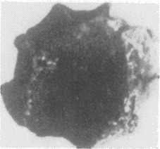
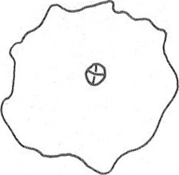

LINEAR A
KNWc3
Names
KNWc3, KN Wc 3
Support
Roundel
Location
Knossos
Findspot
Unavailable


Scribe
Unavailable
Context
(first) Middle Minoan IIIB
1650-1600 BCE
Dimensions
Catalogue
Readings
1 1 0 KA none 1 1 0 I none 1 1 0 KA none
𐘾
𐘚
𐘾
KA
I
KA
𐘾
𐘚
𐘾
KA
I
KA
KN Wc 3
(HM 413) (GORILA II: 84; Hallager 1996a,
Roundel
2: 159) (West Temple Repository, MM IIIB context)
statement
logogram
no. of impressions,
CMS
II 8
]KA-I-
KA
[
2
impressions: no. 116 (lentoid): three rosettes
1
impression: no. 121 (rectangular prism): cross (RO) & dot
Commentary © John Younger
References
papers/GORILA-Vol2.pdf#page=144